Deploy a Micronaut HTTP API Gateway Function (Serverless) application to Oracle Cloud
Learn how to deploy a Micronaut HTTP API Gateway Function (Serverless) application to Oracle Cloud.
On this guide
In this section
Getting Started
In this guide, we will create a Micronaut application written in Groovy.
What you will need
To complete this guide, you will need the following:
-
Some time on your hands
-
A decent text editor or IDE
-
JDK 17 or greater installed with
JAVA_HOMEconfigured appropriately -
Docker installed
-
A paid or free trial Oracle Cloud account (create an account at signup.oraclecloud.com)
-
Oracle Cloud CLI installed with local access to Oracle Cloud configured by running
oci setup config
Solution
We recommend that you follow the instructions in the next sections and create the application step by step. However, you can go right to the completed example.
-
Download and unzip the source
Writing the Application
Create an application using the Micronaut Command Line Interface or with Micronaut Launch.
mn create-app --features=oracle-function,oracle-cloud-sdk,graalvm example.micronaut.micronautguide --build=maven --lang=groovy|
Note
|
If you don’t specify the --build argument, Gradle with the Kotlin DSL is used as the build tool. If you don’t specify the --lang argument, Java is used as the language.If you don’t specify the --test argument, JUnit is used for Java and Kotlin, and Spock is used for Groovy.
|
If you use Micronaut Launch, select "Micronaut Application" as application type, JDK version 17 or higher, and add the oracle-function, oracle-cloud-sdk, and graalvm features.
The previous command creates a Micronaut application with the default package example.micronaut in a directory named micronautguide.
|
Note
|
If you have an existing Micronaut application and want to add the functionality described here, you can view the dependency and configuration changes from the specified features, and apply those changes to your application. |
Dependencies
Add a dependency for oci-java-sdk-core so we have access to classes for managing compute instances:
<dependency>
<groupId>com.oracle.oci.sdk</groupId>
<artifactId>oci-java-sdk-core</artifactId>
<scope>compile</scope>
</dependency>InstanceData
Then create an InstanceData DTO class to represent Compute Instance properties:
package example.micronaut
import com.oracle.bmc.core.model.Instance
import com.oracle.bmc.core.model.Instance.LifecycleState
import groovy.transform.CompileStatic
import io.micronaut.serde.annotation.Serdeable
@CompileStatic
@Serdeable
class InstanceData {
final String availabilityDomain
final String compartmentOcid
final String displayName
final LifecycleState lifecycleState
final String ocid
final String region
final Date timeCreated
InstanceData(Instance instance) {
availabilityDomain = instance.availabilityDomain
compartmentOcid = instance.compartmentId
displayName = instance.displayName
lifecycleState = instance.lifecycleState
ocid = instance.id
region = instance.region
timeCreated = instance.timeCreated
}
}MicronautguideController
The generated application contains a MicronautguideController class which is good for getting started, but we’ll update it to demonstrate working with OCI SDK APIs, in this case working with Compute Instances.
Replace the generated MicronautguideController with this:
Testing the Application
|
Note
|
The code in this guide should work with recent versions of the Micronaut framework 2.5+, but the tests require at least version 2.5.7 |
We need to update the generated MicronautguideControllerTest to test the changes we made in MicronautguideController.
This will be a unit test, so we’ll need some mock beans to replace the beans auto-registered by the oracle-cloud-sdk module which make requests to Oracle Cloud. We also need to take into consideration the strict classloader isolation used by Fn Project (which powers Oracle Cloud Functions).
When running our tests, the test and mock classes are loaded by the regular Micronaut framework classloader, but the function invocations are made in a custom Fn classloader, so it is not directly possible to share state between the two, which complicates traditional approaches to mocking. There is support in Fn for sharing classes however, so instead of setting values in mock instances from the test to be used by the controller we’ll set values in a MockData helper class that’s registered as a class that’s shared between classloaders.
Create the MockData class:
package example.micronaut.mock
import com.oracle.bmc.core.model.Instance.LifecycleState
class MockData {
public static String instanceOcid = 'test-instance-id'
public static LifecycleState instanceLifecycleState
static void reset() {
instanceOcid = 'test-instance-id'
instanceLifecycleState = null
}
}Next create the MockAuthenticationDetailsProvider class. The methods all return null since they won’t be called; the bean merely needs to exist for dependency injection:
Next create the MockComputeClient class which will replace the real ComputeClient bean:
Finally, replace the generated MicronautguideControllerTest with this:
To run the tests:
./mvnw testConfiguring Oracle Cloud Resources
We need to configure some cloud infrastructure to support deploying functions.
Initially, do all the configuration steps described in the guide’s "Configuring Oracle Cloud Resources" section since they’re the same as for HTTP Gateway functions. To summarize, do the following (unless a resource exists and can be used):
-
create a compartment
-
create a function user and group
-
create an auth token
-
configure the OCIR repository in your build script and authenticate to OCIR
-
create a VCN and subnet
-
create policies
|
Note
|
One difference in the configuration steps is that for this guide, do not add a exec.mainClass property in pom.xml since the property exists in the generated application.
|
There is some more infrastructure configuration to do, but we’ll need to create the function first.
Creating the function
First, build the function as a Docker image and push it to the OCIR repository by running:
./mvnw deploy -Dpackaging=dockerOnce you’ve pushed the Docker container, create the function in the console. First, log out from your administrator account and log in as the user created above.
Open the Oracle Cloud Menu and click "Developer Services", and then "Applications" under "Functions":
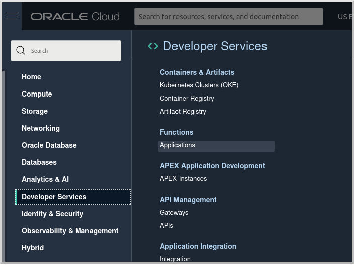
Click "Create Application":
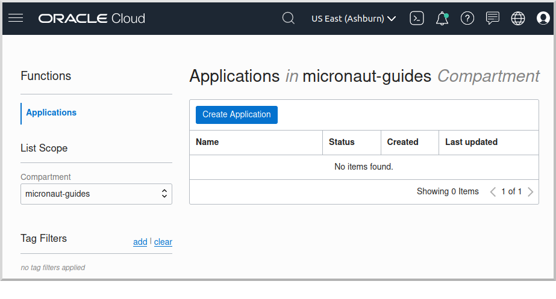
Choose a name for the application, e.g. mn-guide-http-function-app, and select the VCN created earlier. Select the private subnet, and click "Create":
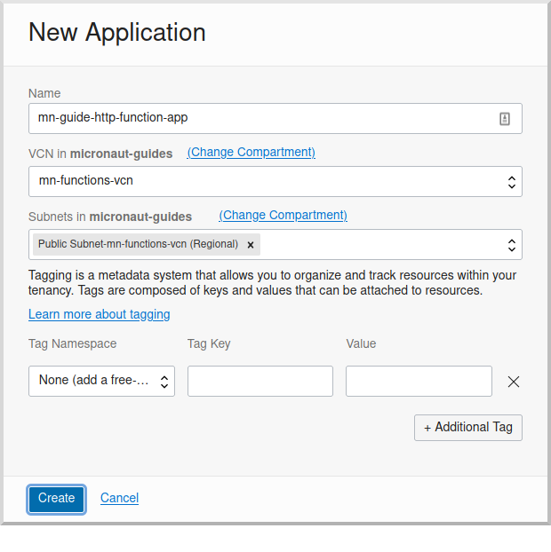
Click "Functions" under "Resources" on the left, and then click "Create Function":
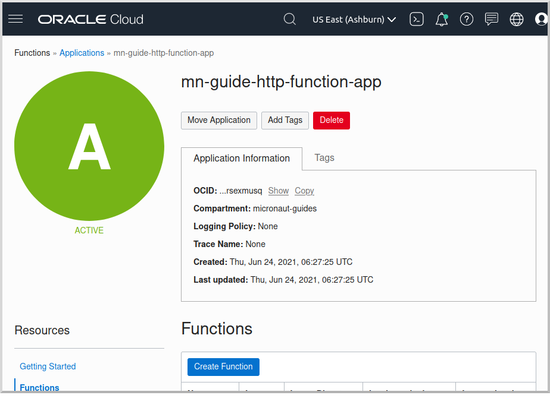
Choose a name for the function, e.g. mn-guide-http-function, select the repository where you pushed the Docker image, and select the uploaded image. Select 512MB memory and click "Create":
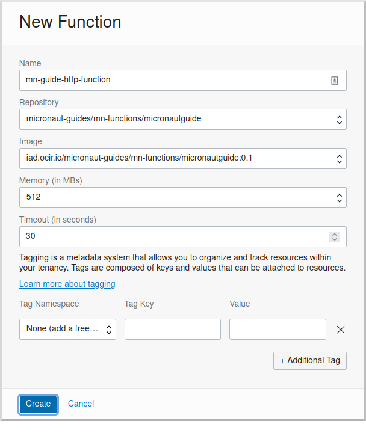
Configuring Oracle Cloud Resources (continued)
Like earlier, do all the configuration steps described in the guide’s "Enable Tracing and Logs" section since they’re the same as for HTTP Gateway functions. To summarize, do the following (unless a resource exists and can be used):
-
create an APM domain
-
enable logs for your HTTP function
-
enable traces for your HTTP function
Next we’ll create an API Gateway, plus a few smaller tasks.
API Gateway
Create an API gateway by clicking the Oracle Cloud menu and selecting "Developer Services", and then click "Gateways":
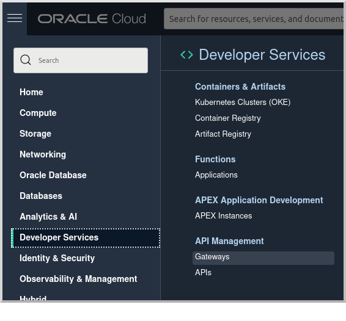
Click "Create Gateway"
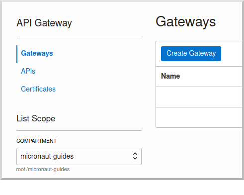
then choose a name, e.g. mn-guide-gateway, then choose a compartment, VCN, and subnet as before:
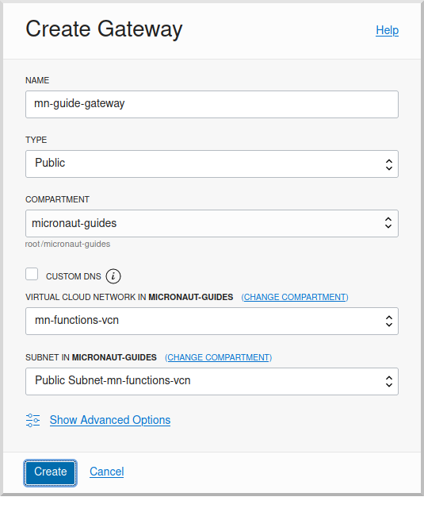
Click "Deployments", then "Create Deployment":
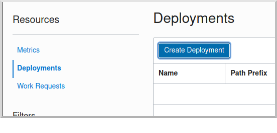
Choose a name for the deployment (e.g. mn-guide-deployment), and use the controller’s root URI (/compute) as the "Path Prefix" value, then click "Next".
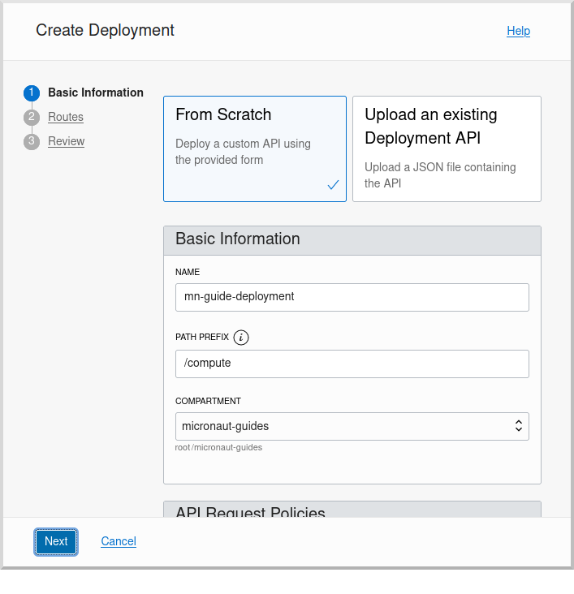
Enter /{path*} as the "Path" value to capture all incoming requests; the Micronaut router will match the incoming path and request method with the proper controller method. Choose ANY under "Methods", and Oracle Functions as the "Type". Choose mn-guide-http-function-app as the "Application" and mn-guide-http-function as the "Function Name", then click "Next":
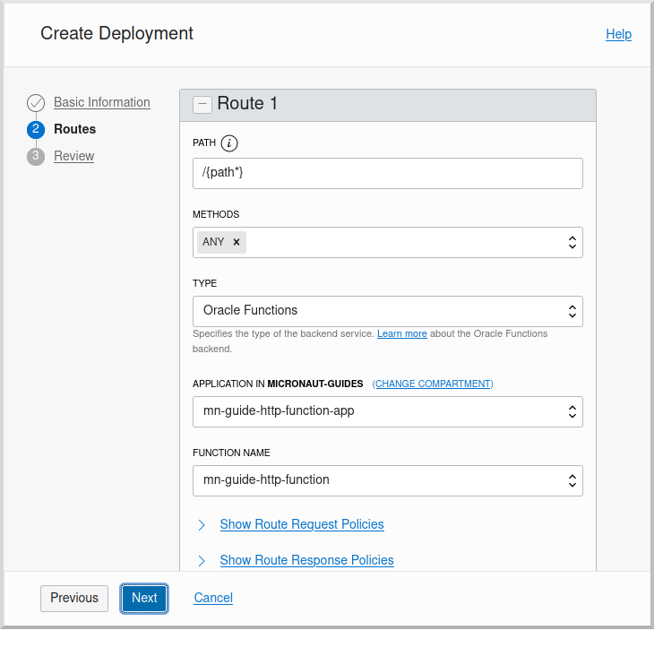
Verify that everything looks OK and click "Create":
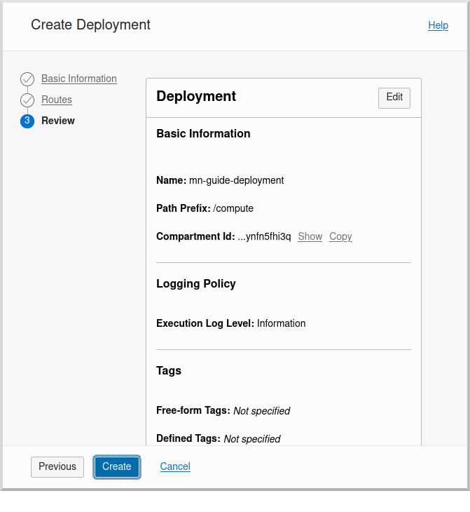
Click the "Copy" link in the "Endpoint" column; this is the base controller URL which will be needed later when testing the function:
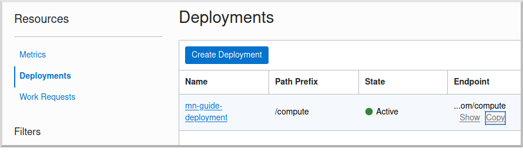
See the API Gateway docs for more information.
Remaining Configuration
Ingress Rule
First, add an ingress rule for HTTPS on port 443. Open the Oracle Cloud Menu and click "Networking", then "Virtual Cloud Networks":
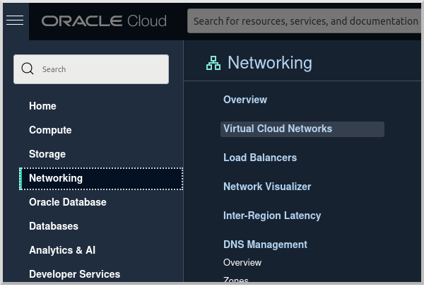
Click the link for mn-functions-vcn:
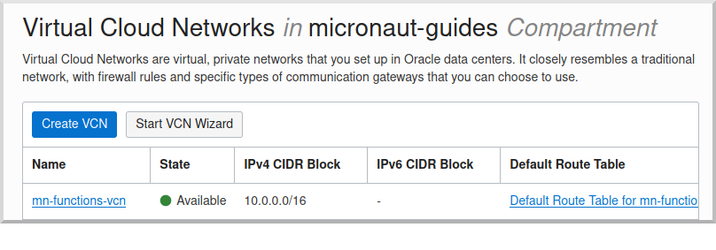
Then click "Security Lists", and click the link for "Default Security List for mn-functions-vcn":
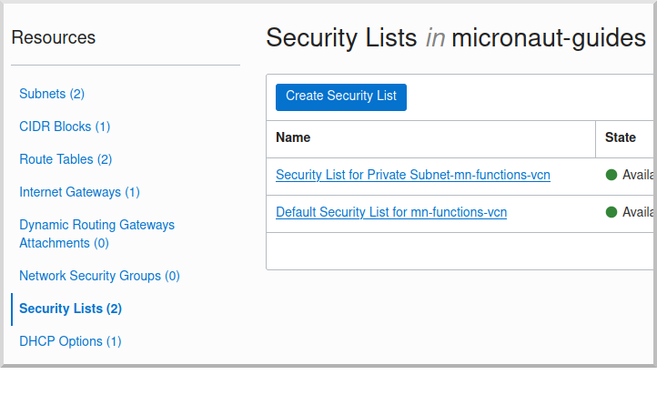
Then click "Add Ingress Rules":
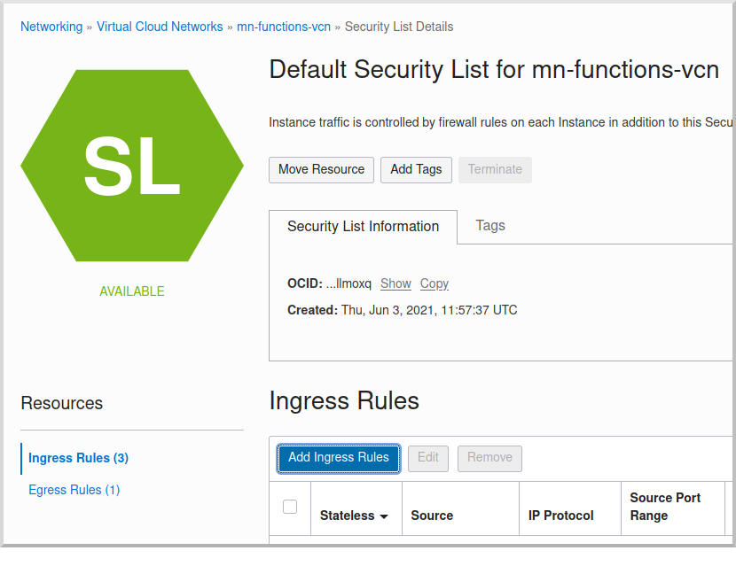
Enter 0.0.0.0/0 for the source CIDR value, and 443 for the destination port range, and click "Add Ingress Rules":
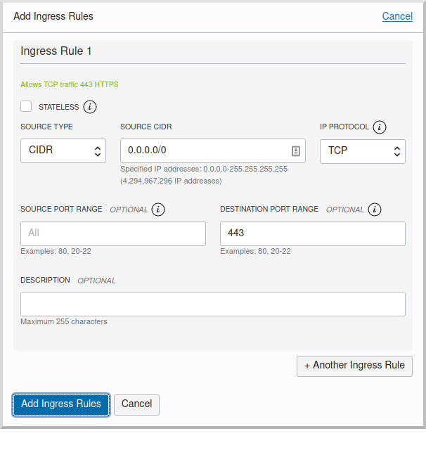
Next we need to grant the function permission to access other cloud resources, in this case compute instances. That will involve creating a dynamic group and adding a new policy statement.
Dynamic Group
Create a Dynamic Group by clicking the Oracle Cloud menu and selecting "Identity & Security", and then click "Dynamic Groups":

Click "Create Dynamic Group":

Then enter a name and description for the group, e.g. "mn-guide-dg", and a matching rule, i.e. the logic that will be used to determine group membership. We’ll make the rule fairly broad - enter ALL {resource.type = 'fnfunc', resource.compartment.id = 'ocid1.compartment.oc1..aaaaaxxxxx'} replacing ocid1.compartment.oc1..aaaaaxxxxx with the compartment OCID where you’re defining your functions, and click "Create":
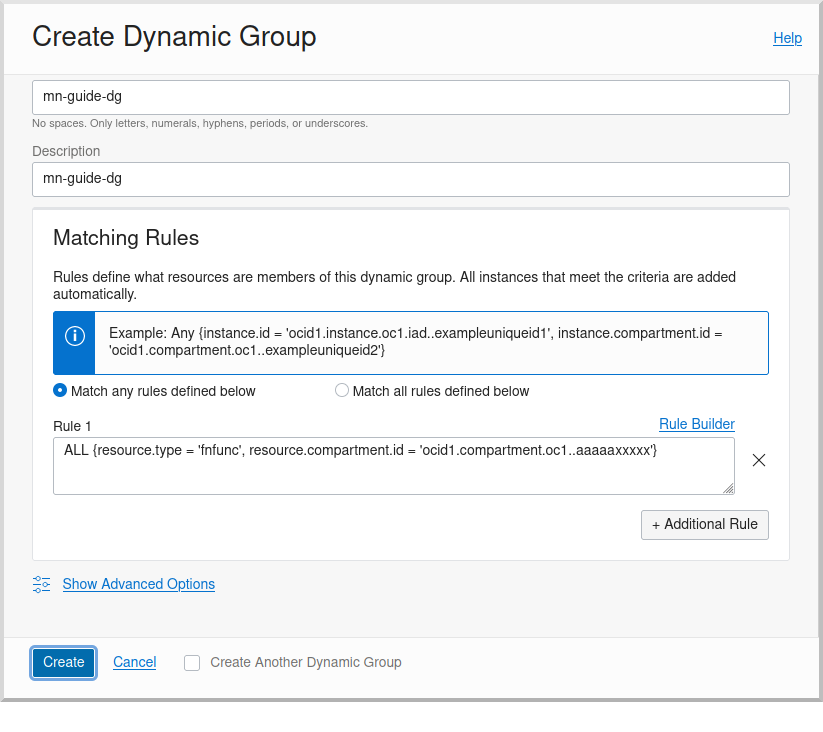
See the Dynamic Group docs for more information.
Dynamic Group Policy Statement
Next create a policy statement granting members of the dynamic group permission to manage compute instances. Open the Oracle Cloud Menu and click "Identity & Security", and then "Policies":

Click the link for the Policy you created earlier (i.e. mn-functions-compartment-policy):
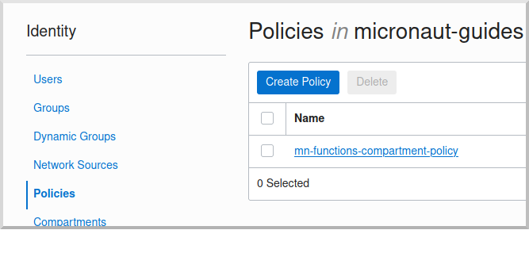
Then click "Edit Policy Statements":
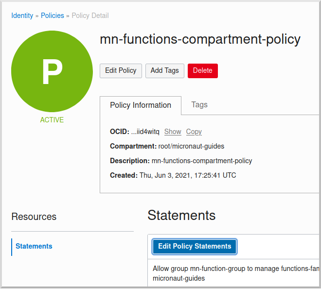
Click "+ Another Statement":
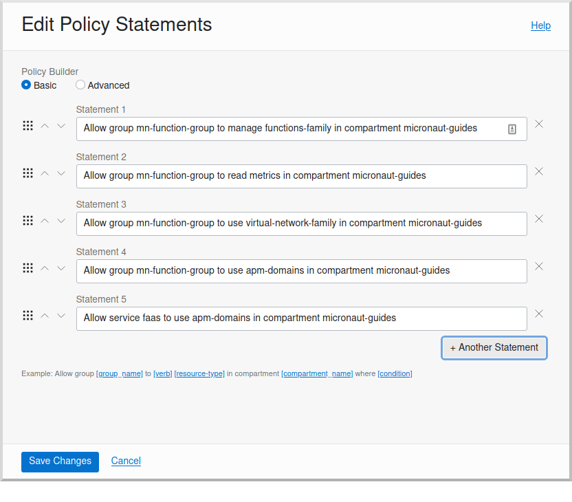
and enter Allow dynamic-group mn-guide-dg to manage instances in compartment <compartment-name>, replacing <compartment-name> with the name of the compartment where you’re defining your functions, and click "Save Changes":
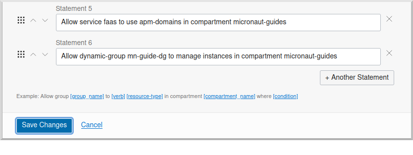
Invoking the function
Since the function works with Compute Instances, make sure you have at least one running. If you don’t have any, one easy option is with the guide.
Now is when you need the base controller URL that you copied when creating the API Gateway; it should look something like https://cjrgh5e3lfqz….apigateway.us-ashburn-1.oci.customer-oci.com/compute and end in /compute since that’s the root URI of the controller.
First, get the status of an instance in a web browser or with cURL by appending /status/INSTANCE_OCID to the base controller URL, replacing INSTANCE_OCID with the OCID of the Compute Instance to query:
curl -i https://cjrgh5e3lfqz....apigateway.us-ashburn-1.oci.customer-oci.com/compute/status/ocid1.instance.oc1.iad.anuwcljrbnqp5k...and the output should look something like this:
{
"availabilityDomain":"nFuS:US-ASHBURN-AD-1",
"compartmentOcid":"ocid1.compartment.oc1..aaaaaaaarkh3s2wcxbbmqnj...",
"displayName":"dribneb",
"lifecycleState":"RUNNING",
"ocid":"ocid1.instance.oc1.iad.anuwcljrbnqp5k...",
"region":"iad",
"timeCreated":1624594779093
}|
Note
|
You can also invoke the /status action in a web browser since it’s a GET method, but the others require cURL or some other application that can make POST requests
|
The first invocation ("cold start") will take a while as the infrastructure is configured, probably 10-20 seconds or more but subsequent invocations should return in 1-2 seconds.
Next, stop the instance with the same URL, except replace /status/ with /stop/:
curl -i -H "Content-Type: application/json" -X POST https://cjrgh5e3lfqz....apigateway.us-ashburn-1.oci.customer-oci.com/compute/stop/ocid1.instance.oc1.iad.anuwcljrbnqp5k...and the output should look something like this (it should be the same as before except lifecycleState should be STOPPING):
{
"availabilityDomain":"nFuS:US-ASHBURN-AD-1",
"compartmentOcid":"ocid1.compartment.oc1..aaaaaaaarkh3s2wcxbbmqnj...",
"displayName":"dribneb",
"lifecycleState":"STOPPING",
"ocid":"ocid1.instance.oc1.iad.anuwcljrbnqp5k...",
"region":"iad",
"timeCreated":1624594779093
}Once the status is STOPPED you can start it again with the same URL, except replace /stop/ with /start/:
curl -i -H "Content-Type: application/json" -X POST https://cjrgh5e3lfqz....apigateway.us-ashburn-1.oci.customer-oci.com/compute/start/ocid1.instance.oc1.iad.anuwcljrbnqp5k...and the output should look something like this (it should be the same as before except lifecycleState should be STARTING):
{
"availabilityDomain":"nFuS:US-ASHBURN-AD-1",
"compartmentOcid":"ocid1.compartment.oc1..aaaaaaaarkh3s2wcxbbmqnj...",
"displayName":"dribneb",
"lifecycleState":"STARTING",
"ocid":"ocid1.instance.oc1.iad.anuwcljrbnqp5k...",
"region":"iad",
"timeCreated":1624594779093
}Deploying as a Native Executable
Install GraalVM
We will use GraalVM, an advanced JDK with ahead-of-time Native Image compilation, to generate a native executable of this Micronaut application.
Compiling Micronaut applications ahead of time with GraalVM significantly improves startup time and reduces the memory footprint of JVM-based applications.
|
Note
|
Only Java and Kotlin projects support using GraalVM’s native-image tool. Groovy relies heavily on reflection, which is only partially supported by GraalVM.
|
sdk install java 25.0.2-graalFor installation on Windows, or for a manual installation on Linux or Mac, see the GraalVM Getting Started documentation.
The previous command installs Oracle GraalVM, which is free to use in production and free to redistribute, at no cost, under the GraalVM Free Terms and Conditions.
Alternatively, you can use the GraalVM Community Edition:
sdk install java 25.0.2-graalceBuilding and deploying the native executable
Deploying the function as a native executable is similar to the earlier deployment above.
First you need to update your build script with the location to deploy the native executable Docker container.
Since it’s unlikely that you’ll be deploying both jar-based containers and native executable-based containers, you can use the same repo. If you wish to separate the native executable containers, edit pom.xml and update the jib.docker.image property, appending "-native" to the value:
<jib.docker.image>[REGION].ocir.io/[TENANCY]/[REPO]/${project.artifactId}-native</jib.docker.image>Next, update the version.
Edit pom.xml and increment the version to 0.2:
<version>0.2</version>Depending on the Micronaut version you’re using, you might also need to update some properties in your build script to update the Docker configuration.
In the "configuration" block of the "micronaut-maven-plugin" plugin in your pom.xml, change the base image to gcr.io/distroless/cc-debian10 in a new baseImageRun element:
<plugin>
<groupId>io.micronaut.build</groupId>
<artifactId>micronaut-maven-plugin</artifactId>
<configuration>
<baseImageRun>gcr.io/distroless/cc-debian10</baseImageRun>
</configuration>
</plugin>Then from the demo project directory, run:
./mvnw deploy -Dpackaging=docker-nativeOnce you’ve pushed the Docker container, edit the function in the console to use the new container, and to reduce the memory to 128MB:
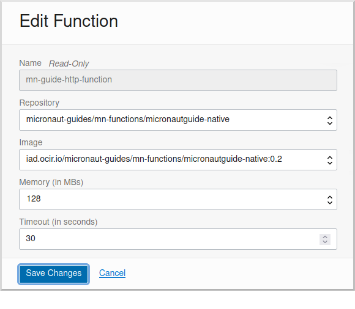
Use the same OCI command as before to invoke the function. No changes are needed because the function OCID doesn’t change when deploying new containers.
Next Steps
Explore more features with Micronaut Guides.
Read more about the Micronaut Oracle Cloud integration.
Also check out the Oracle Cloud Function documentation for more information on the available functionality.
License
|
Note
|
All guides are released with an Apache License 2.0 for the code and a Creative Commons Attribution 4.0 license for the writing and media (images). |